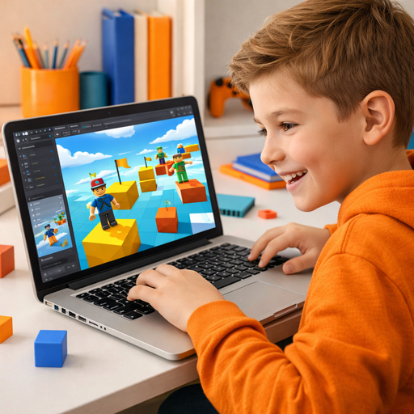
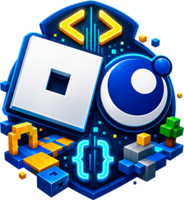
7-16 летКод
Программирование в Roblox
Игровая среда, скрипты и быстрый результат уже на первых занятиях.
Крупные карточки и быстрые фильтры по интересам.


Игровая среда, скрипты и быстрый результат уже на первых занятиях.
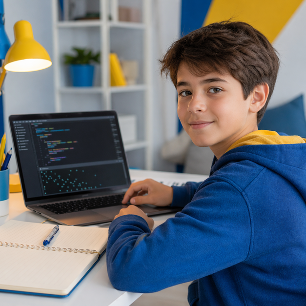
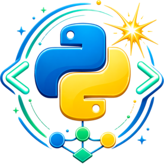
Первый настоящий язык программирования без перегруза и с понятной логикой.
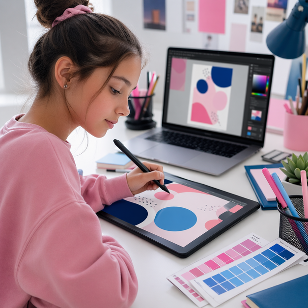
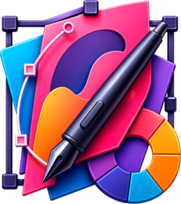
Композиция, цвет, типографика и первые сильные визуальные работы.
Сначала возраст, потом подходящий формат старта и роста.
Мягкий вход в алгоритмы через истории и игровые действия.
Файлы, интернет, безопасность и уверенная работа за компьютером.
Игры и анимации, где ребёнок сразу видит результат своего кода.
Собственные миры, правила и скрипты в привычной игровой среде.
Системный вход в программирование для более осознанного старта.
3D-моделирование, сцены и проектная работа для портфолио.
Список направлений слева и акцент на выбранном курсе справа.
Не по предмету, а по мечте: игра, сайт, 3D-модель или визуальный проект.
Лучший вход, если ребёнку нужно не “учить код”, а строить игровой мир, сценарии и механику в знакомой среде.
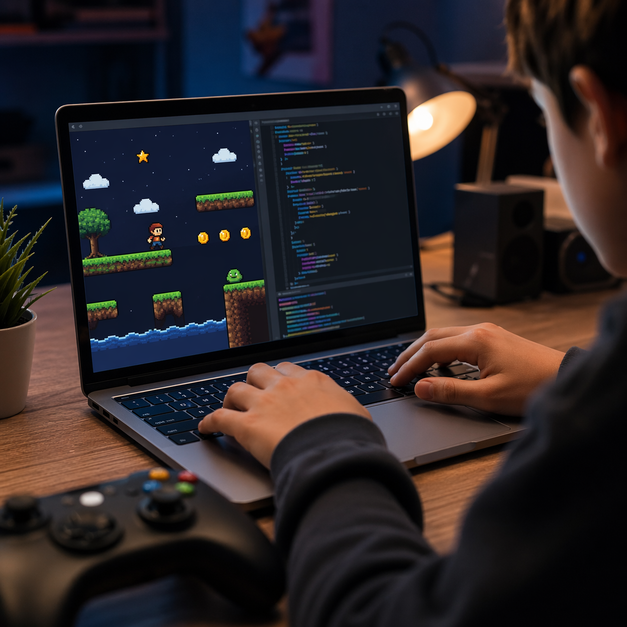
Если хочется перейти от интереса к играм к более серьёзной разработке на Python и собственным 2D-проектам.
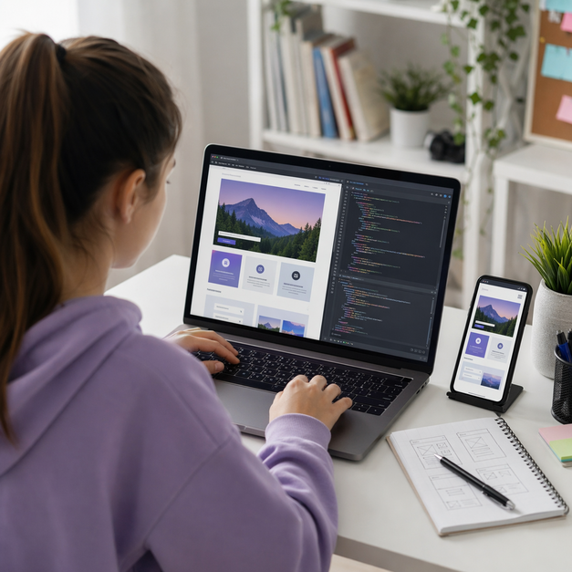
Сайты, интерфейсы, адаптивная вёрстка и ощущение, что ребёнок делает уже взрослый цифровой продукт.
Хорошая база, если сайт интересен не только как визуал, но и как путь к логике и программированию.
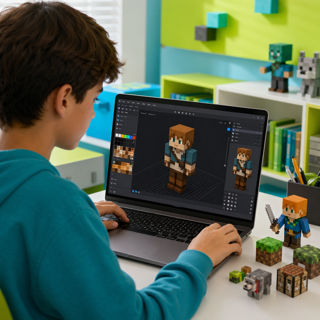
Самый дружелюбный вход в 3D для детей, особенно если им нравится игровая и пиксельная эстетика.
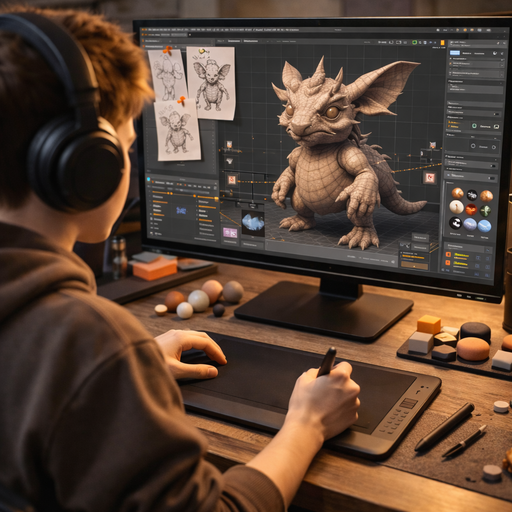
Более взрослый уровень: сцены, формы, материалы и проекты, которые уже можно класть в портфолио.
Постеры, композиция, цвет и визуальные материалы для детей, которым важен творческий самовыраженный результат.
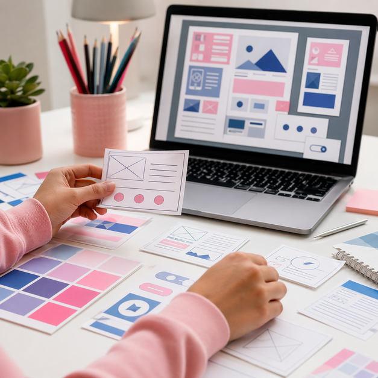
Если ребёнку интересны интерфейсы, экраны, логика страниц и современная цифровая визуальная среда.
Секция как дорожная карта: что попробовать сначала, чем усилить навык и куда расти дальше.
Первая логика для самых младших через истории, персонажей и движение.
Основа цифровой уверенности перед любым более сложным направлением.
Игры и анимации, где ребёнок сразу видит, что его алгоритм работает.
Осознанный вход в программирование с понятной системой и логикой.
Скрипты, события и полноценные игровые миры в любимой среде ребёнка.
Настоящие сайты, интерактив и публикация результата в реальной среде.
3D-сцены, материалы и более взрослые визуальные проекты для портфолио.
2D и 3D-игры, физика, сцены и сборка уже серьёзного игрового прототипа.
Секция для родителей, которые лучше понимают не “какой предмет”, а “как именно ребёнку нравится учиться и что ему интересно”.
Идеально заходит детям, которым важно не просто учиться, а сразу влиять на события, правила и механику игры.
Игровая среда снимает страх перед кодом: ребёнок быстрее включается, видит цель и понимает, зачем вообще нужны скрипты.
Собственные игровые механики, интерактивные сцены и понятный переход к более серьёзному GameDev.
Хороший вариант помягче, если хочется сохранить игровой формат, но сделать вход проще.
Следующий шаг, если ребёнку уже нужен более настоящий игровой проект на Python.
Подходит детям, которым нравится логика, структура и ощущение, что они собирают систему шаг за шагом.
Python даёт очень ясную причинно-следственную связь: написал, запустил, увидел, как работает логика.
Фундамент, на который потом легко наслаиваются игры, веб, боты и более сложные проекты.
Продолжение для тех, кому интересно строить уже полноценные веб-приложения.
Хороший прикладной формат, где логика сразу превращается в полезный цифровой продукт.
Сильная точка входа для ребёнка, который мыслит визуально и любит создавать заметный красивый результат.
Ребёнок быстро получает результат, который можно показать: постер, композицию, набор визуальных решений.
Насмотренность, вкус и базу для перехода в веб-дизайн, интерфейсы и цифровые продукты.
Следующий шаг, если интерес смещается от плакатов и графики к экранам и сайтам.
Для детей, которым хочется, чтобы визуал стал ещё и объёмным, со сценами и объектами.
Подходит детям, которые любят конструировать, придумывать объекты и видеть объёмный результат своей работы.
Blender сразу даёт ощущение серьёзного инструмента и собирает воедино форму, материал, сцену и идею.
3D-проекты для портфолио и сильную базу для игр, визуализации и цифрового творчества.
Более лёгкий и дружелюбный вход в моделирование для младших детей и фанатов игровых форм.
Следующий шаг, если хочется, чтобы модель и сцена стали частью уже полноценной игры.
Не отдельные курсы, а уже цельные траектории: от первого интереса до более сильного результата внутри одной темы.
Траектория для детей, которым важна динамика, сценарии, игровые механики и ощущение настоящего GameDev.
Игровая логика, объекты, события, уровни, правила и привычка собирать проект по частям, а не просто нажимать кнопки.
Детям, которые хотят “делать свою игру”, а не слушать абстрактные объяснения про код без результата.
Scratch Jr, Scratch, Roblox Studio, Python Pygame, Unity.
Для детей, которым важен системный рост: понять основу, а потом применять её в играх, ботах и веб-разработке.
Условия, циклы, функции, структуры данных, прикладные задачи и плавный переход к полноценной разработке.
Тем, кто любит логику, последовательность и хочет не просто “поиграть”, а научиться строить работающую систему.
Python Start, Tkinter, Chatbot, Python Pygame, Flask / Django.
Для детей, которые любят красоту, форму, композицию и хотят видеть сильный визуальный результат своей работы.
Композиция, цвет, типографика, визуальная иерархия, интерфейсы и первые цифровые продуктовые решения.
Тем, кому важно не только как что-то работает, но и как это выглядит, ощущается и воспринимается человеком.
Графический дизайн, Веб-дизайн, Blender.
Для детей, которым нравится собирать объекты, формы и миры, а не просто наблюдать за готовым результатом.
Модели, персонажи, ассеты, сцены, материалы и связка 3D с игровой или визуальной задачей.
Тем, кто любит объём, форму, пространственное мышление и хочет собирать не плоский, а настоящий мир.
Blockbench, Blender, Minecraft-моды, Unity.